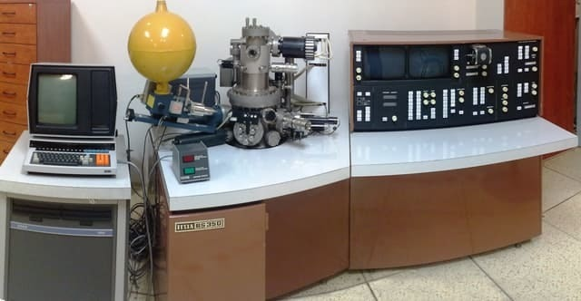

多発性筋炎の鍼灸
自己免疫が筋肉や皮膚を攻撃し筋力低下や倦怠感を起こす膠原病（指定難病）です。専門医治療を最優先に、安定期の体調維持を支えます。
まず知っておきたい要点と改善の流れ
多発性筋炎は膠原病の一種（指定難病）で、自己免疫系が誤って自身の筋肉組織を攻撃し、炎症と筋力低下を引き起こします。特徴的な皮疹を伴う場合は皮膚筋炎と呼ばれます。発症には自己免疫異常に加え遺伝的素因や感染症、生活習慣などが関わると考えられています。ステロイド薬や免疫抑制薬による専門治療が基本であり、間質性肺炎や悪性腫瘍、心筋炎などの重篤な合併症に注意して定期検査を続けることが極めて重要です。（公式解説）
このようなお悩みはありませんか？
- ✓両腕や太ももなど体幹に近い筋肉が徐々に弱くなり、立ち上がりや階段が辛い
- ✓日常の動作で強い疲労感や倦怠感、筋肉痛、関節痛が続いている
- ✓食べ物の飲み込みにくさ（嚥下障害）や息切れを感じることがある
- ✓皮膚の赤みや発疹（皮膚筋炎）があり、専門医で経過観察を受けている
当院の施術アプローチ・改善の流れ
なぜ鍼灸で改善へ向かうのか？（作用機序の図解）
多発性筋炎に対する鍼灸は、神経性炎症・掻痒（かゆみ）伝達と自律神経の鎮静機序を通じて、お体本来の回復力を引き出します。

湿疹・傷口への直接刺激を避け、曲池・血海・築賓・三陰交など全身の調整穴へアプローチします。
痒み感覚を伝える神経経路の過敏性を鎮め、「かゆい→掻く→悪化」の悪循環を断ちます。
交感神経の過緊張や夜間覚醒を和らげ、皮膚の修復が進みやすい血流と睡眠環境を整えます。
標準の保湿・外用・内服治療と協調し、ストレスや季節変化で悪化しにくい土台を支えます。
院長YouTube解説・関連動画
公開日：２０２１年 １０月２３日
更新日：２０２３年 ８月 １日
本日は多発性筋炎について解説させていただきます。
☆本記事の内容
- •多発性筋炎とは
- •多発性筋炎の原因
- •多発性筋炎の症状
- •多発性筋炎の改善方法
- •多発性筋炎のまとめ
- •多発性筋炎は、膠原病の一種
- •多発性筋炎の原因は、免疫が自分の皮膚や筋肉を攻撃すること
- •多発性筋炎の症状は倦怠感や疲労感、筋肉の疲れやすさなど
- •多発性筋炎の主な改善方法は、薬
- •合併症に注意する
銀座そうぜん鍼灸院の宗前です。
このページを書いている私は、鍼灸師として１３年、担当した利用者様数８０，０００人を誇り、病気の休職者３００人を社会復帰できるまで回復させてきた実績があります。
多発性筋炎の症状は倦怠感や疲労感、筋肉の疲れやすさなど
多発性筋炎の症状は、倦怠感や疲労感、食欲不振、筋肉の力の入りにくさや疲れやすさ、筋肉の痛みです。場合によっては発熱が見られることもあります。他にもいろいろな症状が現れることがあります。
皮膚筋炎の場合は、皮膚の症状も現れます。現れる症状で目立つものは顔の紅い皮疹で、むくみのある紅い皮疹が眼瞼に現れます。他にも、鼻唇溝、頭皮などにも紅斑が現れることがあります。
手指の関節の背側の表面にがさがさの盛り上がった紅斑が起きたり肘関節や膝関節外側のがさがさした紅斑が起きたりすることも特徴的な症状です。皮膚の症状は痒みがあることがほとんどで、多くの場合は最初の段階で痒みが現れます。
症状は人によって様々で、筋肉の症状がほとんどなく皮膚の症状だけ現れることもあります。筋肉の症状は少しずつ現れます。筋力の低下は、身体に近い筋肉に現れやすいです。
腕の筋力が下がると、洗濯物を干すなどの高い場所に物を上げる動作をするとき腕が上げにくくなります。太ももの筋力が下がると、階段を昇るのが難しくなります。首の筋力が下がると、頭を枕から持ち上げることが難しくなります。
喉の筋力が下がると、食べ物が飲み込みにくくなったり、むせたり、話しにくくなったりすることもあります。食べ物が気管に入りやすくなるため、肺炎が起きることもあります。
非常に珍しいケースですが、心臓の筋肉も傷つくことがあります。その場合は不整脈や心不全症状が起きることもあります。皮膚の症状と筋肉の症状以外にも、関節の痛みや腫れなどの関節症状が現れることもあります。
多発性筋炎で現れる症状は人によって様々なのです。
多発性筋炎は筋肉の炎症と弱化が特徴的で、全身の筋肉に影響を及ぼす可能性があります。以下はこの病気の主な症状と、それに関連するいくつかの要因についての詳細です。
1. 筋力の低下
段階的な筋肉の弱化: 多発性筋炎は通常、ゆっくりとした進行性の筋力低下を引き起こします。特に大腿部や上腕部などの近位筋肉に影響を及ぼすことが多いです。
体の両側の筋肉に影響: この疾患はしばしば体の両側に影響を及ぼします。つまり、両方の腕や両方の脚に同時に症状が現れることが一般的です。
2. 疲労感と痛み
筋肉の疲労: 日常的な活動で疲れやすく感じることが一般的です。
筋肉痛: 一部では筋肉の痛みや不快感を経験することがあります。
3. 飲食と嚥下の困難
嚥下障害: 咽頭や食道の筋肉に影響を受けると、食べ物や液体の摂取が困難になる場合があります。
4. 呼吸困難
呼吸筋の影響: 肺を動かす筋肉が弱くなると、呼吸が困難になることがあります。
5. 関連する疾患や症状
皮膚の変化: 一部では、皮膚に赤みや発疹などの変化が見られることがあります。これは特に多発性筋炎と関連する別の疾患である皮膚筋炎の特徴です。
関節痛: 筋肉だけでなく、関節にも影響を及ぼすことがあります。
6. 心臓への影響
心筋炎: まれに心筋に炎症が起きることがあり、心臓のリズムや機能に影響を及ぼす可能性があります。
多発性筋炎の主な改善方法は、薬です。ただし、人によって症状が様々であるため、改善方法も人によって様々です。改善のために使われることが多い薬は、副腎皮質ステロイド薬です。
日常生活では、安静にすることが必要です。しかし、回復が始まった後はリハビリも必要になります。皮膚の症状がある場合は、日光などを避け、できるだけ紫外線にあたらないように生活をすることも必要です。
皮膚症状だけの場合には、局所ステロイド薬で改善を行うことが多いです。
1. 免疫抑制薬
ステロイド: 初期には、通常プレドニゾンなどのステロイド薬が処方されます。これらは筋肉の炎症を抑制し、症状を改善するのに効果的です。
免疫抑制剤: ステロイド治療の副作用を減らすため、またはステロイドだけでは効果が不十分な場合に、アザチオプリンやメトトレキサートなどの免疫抑制剤が追加されることがあります。
2. リハビリテーション
リハビリテーション: 筋肉の強度と機能を改善するための専門的なリハビリテーションが重要です。個別のニーズに合わせたエクササイズプログラムが作成されます。
3. 飲食管理
栄養指導: 嚥下困難の場合、専門の栄養士と協力して、適切な飲食計画を立てることが重要です。
4. 生活習慣の改善
喫煙と飲酒の制限: 健康的な生活習慣の促進として、喫煙と飲酒の制限が勧められることがあります。
5. 心臓や肺への対策
心臓のモニタリング: 心臓に影響がある場合、心臓専門医による改善が必要になることもあります。
呼吸器の改善: 呼吸筋が弱くなると、呼吸器の改善が必要になることがあるため、専門家との連携が重要です。
6. 心理的サポート
カウンセリングとサポート: 病気の精神的な側面も重要であり、カウンセリングやサポートグループが本人と家族に提供されることがあります。
副腎皮質ステロイド薬の効果
抗炎症作用: ステロイド薬は炎症を抑制する作用があります。これは、免疫応答の一部となる白血球の働きを抑えることにより、炎症反応を減少させるためです。
免疫抑制作用: ステロイド薬は免疫系の反応を抑制します。これは自己免疫の病気の改善や、移植手術後の拒絶反応の予防に役立ちます。
抗アレルギー作用: アレルギー反応によって引き起こされる炎症を抑制します。
水分・電解質調節作用: ソルタンバランスと体内の水分量を調整する役割も果たします。
使用目的
ステロイド薬の抗炎症、免疫抑制などの効果は、以下のような多岐にわたる分野で利用されます。
関節リウマチ: 関節の炎症を抑制し、関節の痛みや腫れを和らげます。
喘息: 気道の炎症を抑制し、喘息の発作を予防します。
慢性閉塞性肺の病気: 気道の炎症を減少させることで呼吸を改善します。
多発性硬化症などの自己免疫の病気: 自己免疫反応を抑制し、病状の進行を遅らせます。
腎臓の病気: 腎臓における炎症反応を抑えます。
移植後の拒絶反応の予防: 移植臓器への拒絶反応を抑制するために使用されます。
皮膚の炎症: アトピー性皮膚炎や接触性皮膚炎など、皮膚の炎症を改善します。
ステロイド薬は強力な効果がある一方で、長期間の使用や大量投与は副作用を引き起こす可能性があります。これには、骨粗鬆症、糖尿病、高血圧、胃潰瘍、眼の障害（白内障、緑内障）などがあります。
そのため、ステロイド薬は医師の指示に従って適切に使用する必要があり、急に中止すると副腎不全を引き起こす可能性があるため、徐々に減量していくことが一般的です。

多発性筋炎は他の病気を合わせて起こすこともあります。中でも、間質性肺炎と悪性腫瘍には特に注意が必要です。
間質性肺炎は、自己免疫が自分自身の肺を攻撃することによって起こる肺炎です。特に、筋肉の症状があまりなく皮膚の症状が強い皮膚筋炎の場合は、間質性肺炎の進むスピードが非常に速いことが多いため注意が必要なのです。
皮膚筋炎が起こった時、悪性腫瘍が起こることが多いです。
合併症は、多発性筋炎や皮膚筋炎を発症して改善した後に見つかることもあるため、改善してからも定期的に調べることをお勧めします。
皮膚のお悩みのツボ図解とセルフケア
実際の施術ではお一人おひとりの体質・症状に合わせて選穴しますが、皮膚症状（アトピー性皮膚炎・慢性蕁麻疹・掻痒感）の臨床でよく用いられる代表的なツボの目安です。

📌 代表的なツボの詳細一覧表を開く（6穴） ▼
| ツボ名 | 位置の目安 | 主な狙い | セルフケアの注意点 |
|---|---|---|---|
| 曲池（きょくち） | 肘を曲げた外側の横ジワ先端 | 皮膚の熱感・炎症・掻痒感の鎮静 | 肘に湿疹・びらん・掻き傷がある場合は直接触れない |
| 血海（けっかい） | 膝のお皿の内側上端から指3本分上 | 蕁麻疹・掻痒・末梢循環の調整 | 皮疹部の摩擦・温灸は痒みを増悪させるため回避 |
| 合谷（ごうこく） | 手の甲、親指と人差し指の骨が交わる手前 | 顔面〜上半身の皮膚トラブル・自律神経調整 | 妊娠中の強刺激は避ける。手荒れ・亀裂時は押圧しない |
| 三陰交（さんいんこう） | 内くるぶし頂点から指4本分上、すね骨の後ろ際 | 乾燥肌・夜間掻痒・体質バランス調整 | 妊娠中の強刺激は避ける。保湿後に清潔な手で優しく |
| 築賓（ちくひん） | 内くるぶしから指7本分上、ふくらはぎ内側 | 慢性蕁麻疹・アレルギー体質・皮膚炎症緩和 | 強く揉まず心地よい圧で数秒キープ |
| 百虫窩（ひゃくちゅうか） | 血海からさらに指1本分ほど上 | 強い痒み・蕁麻疹・湿疹の鎮痒サポート | 皮膚バリアを傷つけないよう必ず指の腹を使用 |
国際査読論文の科学的エビデンス
国際的な医学データベース（PubMed・Cochrane等）で報告されている皮膚症状（アトピー性皮膚炎・慢性蕁麻疹・掻痒感）領域の代表的な査読済み鍼灸研究をまとめています（標準治療との併用や研究上の限界を含めて正確に掲載）。
📚 査読論文データ・PubMed出典リンクを開く（4件） ▼
| 年・研究デザイン | 対象・規模 | 主な結果 | 限界・出典 |
|---|---|---|---|
| 2023年 多施設3群RCT | 慢性特発性蕁麻疹 330名（3大学病院） | 4週時のUAS7変化量は真鍼-8.2 vs シャム-4.1 vs 待機-2.2と統計的有意差を確認。 | 最小臨床的重要差には未達・短期追跡。 Ann Intern Med (PMID: 37956431) |
| 2024年 メタ解析 | アトピー性皮膚炎 8 RCTs（n=463） | SCORAD（MD -10.61, p=0.004）、掻痒VAS（MD -14.71, p<0.00001）、DLQI（p<0.0001）が有意改善。 | EASI・IgEは有意差なし、大規模検証が課題。 BMJ Open (PMID: 39638592) |
| 2021年 シャム対照RCT | 軽〜中等症アトピー性皮膚炎 36名（韓国） | 4週時の総SCORAD変化は真鍼-11.83 vs シャム+0.45（P<0.0001）、終了4週後も持続。 | 単施設・小規模（重症例への外挿は慎重）。 BMC Complement Med Ther (PMID: 33926433) |
| 2023年 メタ解析 | 難治性掻痒（尿毒症性掻痒）7 RCTs（n=504） | 通常治療比で有効率RR 1.28（P=0.003）、透析併用でRR 1.42（P=0.0002）と有意に掻痒軽減。 | 透析患者対象のため一般皮膚疾患への外挿に留意。 J Pain Symptom Manage (PMID: 36055470) |
参考文献・出典
- 銀座そうぜん鍼灸院「多発性筋炎の公式解説ページ」
- 2023年 多施設3群RCT（慢性特発性蕁麻疹 330名（3大学病院））— Ann Intern Med (PMID: 37956431)
- 2024年 メタ解析（アトピー性皮膚炎 8 RCTs（n=463））— BMJ Open (PMID: 39638592)
- 2021年 シャム対照RCT（軽〜中等症アトピー性皮膚炎 36名（韓国））— BMC Complement Med Ther (PMID: 33926433)
- 2023年 メタ解析（難治性掻痒（尿毒症性掻痒）7 RCTs（n=504））— J Pain Symptom Manage (PMID: 36055470)
よくある質問（FAQ）
Q. 筋力低下や息切れが進行している時期に鍼灸で筋力を戻せますか？▼
Q. 病状が落ち着いている安定期なら鍼灸を受けられますか？▼
あわせて読まれる関連疾患（皮膚のお悩み）
抗U1-RNP抗体が高値となり、SLE・強皮症・多発性筋炎に似た症状が混在する自己免疫疾患です。専門医治療を最優先に安定期の冷えや疲労をケアします。
自己抗体により皮膚や粘膜に水疱・びらんが生じる指定難病です。専門医の免疫抑制療法を最優先に、安定期の体調ケアを補完的に行います。
高熱とともに全身の皮膚や粘膜にびらん・水疱が生じる重症薬疹（指定難病）です。緊急入院が必須で、退院後の安定期ケアのみ対応します。
弾性線維の変性により皮膚・眼・血管に障害が生じる指定難病です。専門医の定期管理を最優先に、安定期の体調維持を補完的に支えます。
明らかな原因なく後天的に全身の汗が出なくなり、体温調節が困難になる指定難病です。皮膚科での治療と冷却対策を最優先とします。
出生時から全身が厚い板状の角質に覆われる最重症型の先天性魚鱗癬です。専門医療機関での全身・皮膚管理が最優先となります。
おひとりで悩まず、まずはご相談ください
銀座本院・川口・大宮・横浜・博多・田無の各院でご予約を承っております。